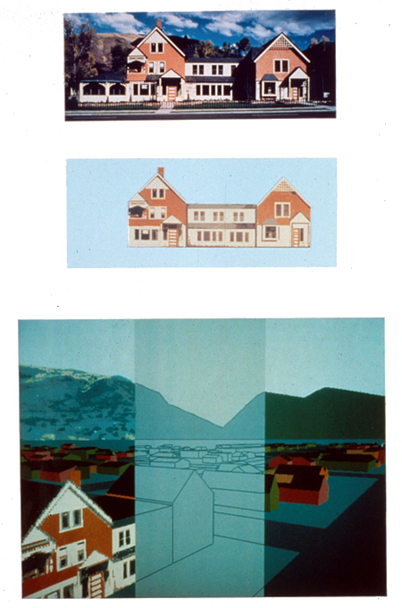
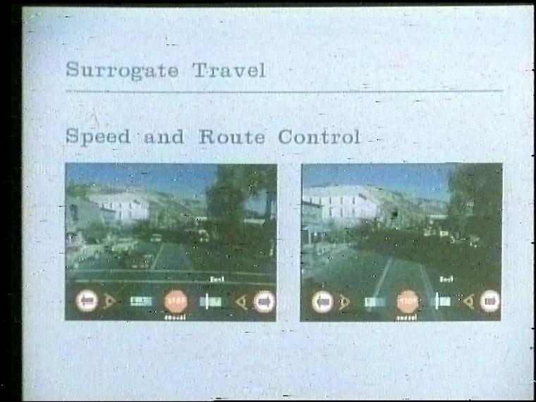

Aspen Movie Map
Drive through a filmed city with a touchscreen — surrogate travel before Street View

Overview
The Aspen Movie Map, developed at MIT's Architecture Machine Group from 1978 to 1981 with ARPA funding, was a hypermedia system that let a user take a virtual tour — a form of "surrogate travel" — through the city of Aspen, Colorado. Film was captured from a car fitted with a gyroscopic stabilizer and four 16mm stop-frame cameras (front, back, and two sides), triggered every ten feet by an optical encoder on a bicycle wheel dragged behind the vehicle. Filming ran daily between 10 a.m. and 2 p.m. to keep lighting consistent, and the car was driven down the center of every street to produce registered match cuts.
The film was assembled into segments (one per view per city block) and transferred to laserdisc, an analog-video format. A database correlated the disc layout with the two-dimensional street plan, and an Interdata minicomputer running the MagicSix operating system acted as client/server: the client handled user input and overlay graphics, the server controlled the laserdisc players and retrieved data. Video, audio, still images, and metadata were assembled on the fly in response to the user — video was the principal, but not sole, affordance of the interaction.
The interface was a dynamically generated menu overlaid on the live video, operated through a touch screen — a harbinger of the interactive-video kiosk. Users set speed and viewing angle by touching icons, switched seasons (summer/winter) mid-drive, jumped to a two-dimensional city map with aerial and cartoon renderings, zoomed in and out à la the Eameses' Powers of Ten, and touched any building in view to jump to its facade, complete with interior shots, historical silver-mining photos, and video interviews of city officials. The military framing: DARPA wanted a way to quickly familiarize soldiers with hostile territory after Operation Entebbe.
Deep dive
A gyroscopic stabilizer built by John Borden of Peace River Films carried four 16mm stop-frame cameras on a car roof. An optical sensor on a dragged bicycle wheel triggered the cameras every ten feet; front, back, and side views were captured as the car traversed the center of every Aspen street. Michael Naimark (Center for Advanced Visual Studies) led cinematography design; filming happened in fall 1978, winter 1979, and again in fall 1979. The first operational version ran in early spring 1979.
Walter Bender designed and built the interface, the client/server model, and the animation system. A dynamically generated menu was overlaid on the video; touching icons changed speed and viewing angle, selected directions at intersections, and toggled seasons. A navigation map above the horizon showed the user's position and a trace of streets already explored. A 3D polygonal model of the city was built with the Quick and Dirty Animation System (QADAS), including texture-mapped facades of landmark buildings (algorithm by Paul Heckbert); the same 3D model translated 2D screen coordinates into a building database, enabling image-map-style hyperlinks years before web image maps.
Touching any building in view could jump to its facade. Selected buildings held additional data: interior shots, historical images, menus of restaurants, and Cinéma vérité interviews of city officials shot by Richard Leacock and Marek Zalewski. Scott Fisher matched historical silver-mining photos to the same scenes as they looked in 1978. In a later implementation, metadata was encoded as a digital signal inside the analog video frames, so each frame carried everything needed for a full-featured surrogate-travel experience.
The actual laserdisc, labeled "Aspen 4", survives — one copy, loaned by Brent Greissle to the Domesday86 project, which duplicated it in 2019 despite heavy laser rot and published a full frame-number index. The 1981 MIT film "The Interactive Movie Map: A Surrogate Travel System" documents the system. A single 13-inch disc master cost about $300,000 to produce; a keyboard, joystick, or trackball of the day sold for around $1,200 each.
Wikipedia calls the Aspen Movie Map "perhaps more accurately a pioneering example of interactive computing" than interactive video, and lists Google Street View under "See also." Its "surrogate travel" concept was inherited by the BBC Domesday Project's surrogate walks (already in this museum) — but Aspen is the original: the first time recorded reality itself was navigable, and the direct ancestor of the interactive-video kiosk.
Team & pioneers
- MIT Architecture Machine Group Led by Nicholas Negroponte; found ARPA (DARPA Cybernetics Technology Office) funding for the project.
- Andrew Lippman Principal investigator and program director of the project.
- Walter Bender Designed and built the interface, the client/server model, and the animation system.
- Michael Naimark Center for Advanced Visual Studies; cinematography design and production.
- Bob Mohl Designed the map overlay system and ran user studies for his PhD thesis on spatial learning.
- Peter Clay MIT undergraduate whose idea the project grew from; filmed the hallway precursor with a camera on a cart.
- Paul Heckbert Texture-mapping algorithm for the QADAS 3D city model.
- Richard Leacock & Marek Zalewski Shot the Cinéma vérité interviews behind key building facades.
Media


Sources
- Wikipedia — Aspen Movie Map
- Michael Naimark — Aspen the Verb / project page
- Domesday86 — The Interactive Movie Map (MIT): disc analysis and restoration
- Lippman, "Movie-maps: An application of the optical videodisc to computer graphics," SIGGRAPH 1980, pp. 32-42
- Mohl, "Cognitive space in the interactive movie map" (MIT PhD thesis, 1982)
- "The Interactive Movie Map: A Surrogate Travel System" (1981 MIT film, YouTube)